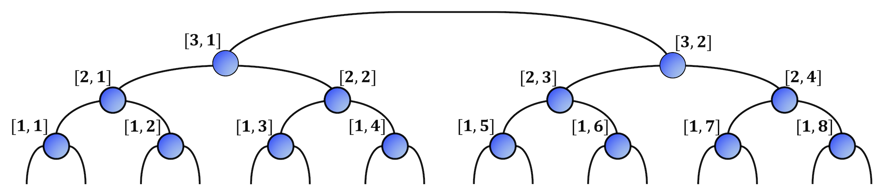

Tree Tensor Networks (TTN)
Tree Tensor Network (TTN) is a loop-free hierarchical tensor network (see belew).
| Tree Tensor Network for a system of size 16 |
|---|
|  |
Due to enhanced connectivity in the structure of TTN, it can support long-range quantum correlations comapred to MPS. Moreover, simulations for systems with periodic boundary conditions (PBC) are almost as efficient as the same with open boundary conditions (OBC). TTNs have found their place for simulating 2D or pseudo-2D ladder/cylinder systems with PBC where the performance of MPS is not adequate.
TenNetLib.jl implements the unconstrained optimization for obtaining ground as well as excited states as described in Phys. Rev. B 90, 125154 (2014) and SciPost Phys. Lect. Notes 8 (2019).
Each tensor in the TTN are indexed by a pair (Tuple) of Ints = (ll, nn).
TenNetLib.Int2 — Typeconst Int2 = Tuple{Int, Int}Tuple of two Ints.
In the default scenario, ll denotes the layer index and nn denotes the tensor index at each layer (see the image above). The counting for ll, in the default case, starts at the bottom (towards to top level), while nn counts from left. The structure of the network is defined by a Graph{Int2} object. The link / bond between two neighboring nodes is denoted by a LinkTypeTTN object, an unordered pair of Int2s.
TenNetLib.LinkTypeTTN — Typestruct LinkTypeTTN
first::Int2
second::Int2
endLink / bond between two nodes first and second.
The order of the nodes inside LinkTypeTTN is irrelevant, i.e., LinkTypeTTN(node1, node2) == LinkTypeTTN(node2, node1).
TenNetLib.jl can automatically handle system-sizes that are not powers of 2. No special care is needed for such system-sizes.
| TTN for system-size 12 | TTN for system-size 14 |
|---|---|
Sites 1, 4, 7, 11 are directly connected to ll=2 tensors | Sites 5, 12 are directly connected to ll=2 tensors |
| Nodes (1,1), (1,3), (1,5), (1,7) are removed | Nodes (1,3), (1,7) are removed |
 |
The TTN codes defined in TenNetLib.jl can readily work, without any changes, for any loop-free tensor networks, e.g., Fork Tensor Networks.
For 2D systems, use a mapping from the 2D lattice to a 1D chain using Hilbert curve, as shown in Quantum 5, 556 (2021)